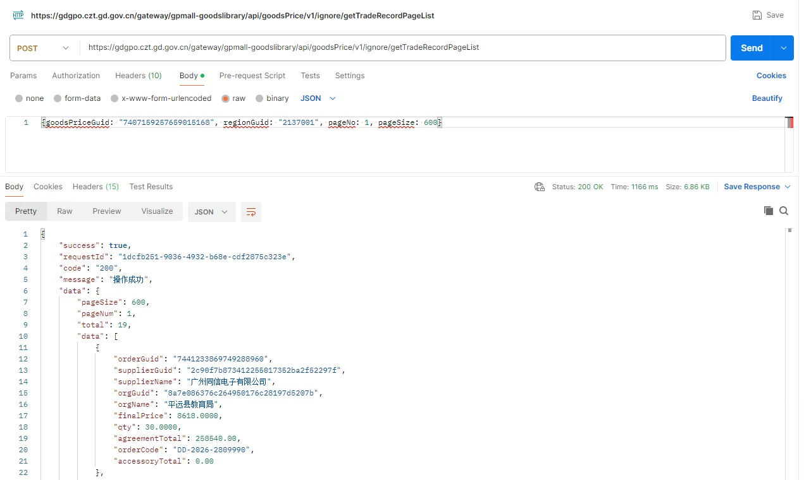
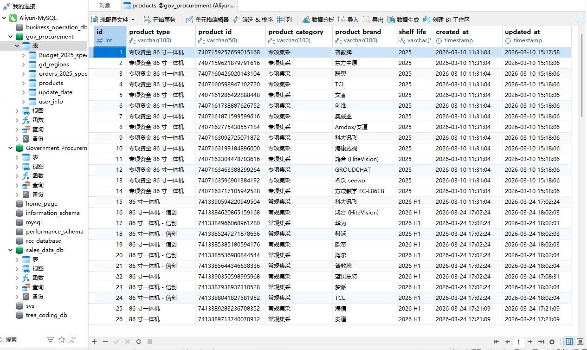
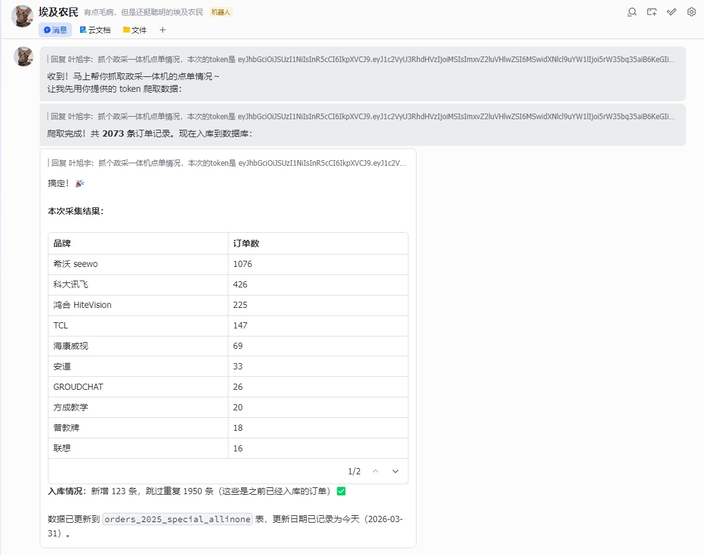
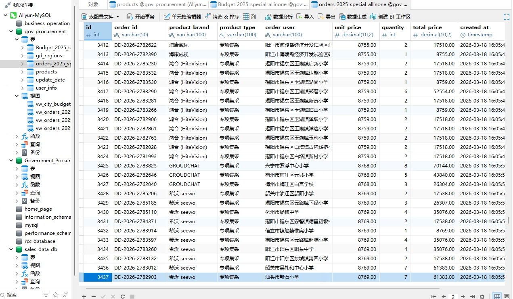
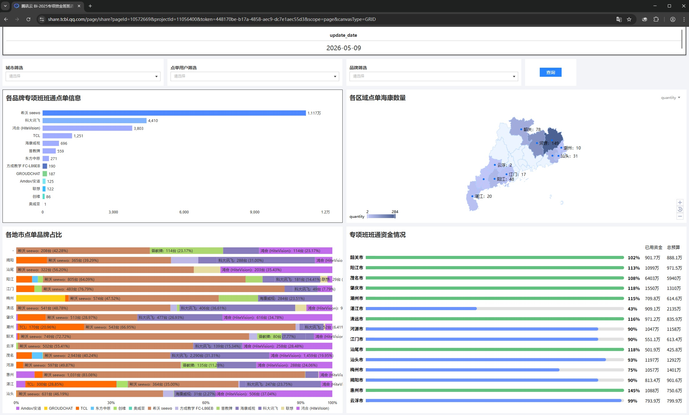
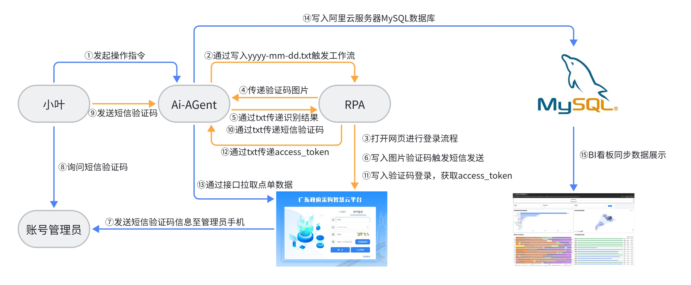
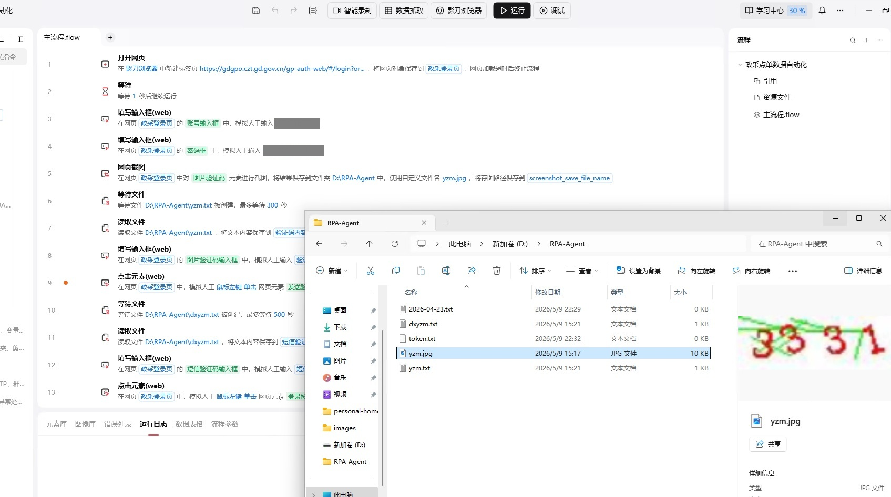
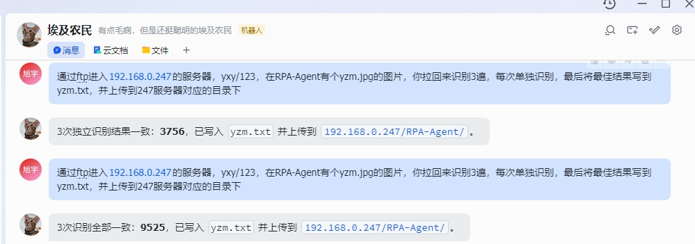

基于影刀RPA+AI Agent的自动化数据看板搭建
项目背景
广东省教育厅每年有一笔专项资金，按一定规则划拨给15个欠发达地市，用于政采网上商城入围的专项一体机产品的采购，我司在项目中完成入围，为跟进各区域采购情况与资金用量，从而协调资源支撑潜力地市，需要对政采网上商城的点单信息进行跟踪，并结合资金分配情况，输出整体业务数据看板，直观展示各区域情况。
然而常规情况下，是人工登录网上商城，进入每个商品的详情页中，逐页复制订单信息。工作量大以及效率低下带来的结果就是实时性低，无法快速反馈市场情况。
设计目标
1-通过对政府采购线上商城上架的特定品类商品，进行点单数据抓取，结构化存储订单信息；
2-对订单信息进行归属地判别，结合财政专项资金分配情况，判定各个区域资金用量与剩余市场容量；
3-将数据通过BI看板进行呈现，同步各地市同事进行市场情况跟踪。
项目设计初版逻辑
1-通过对政采网上商城的研究，找到商品的订单详情请求接口，通过postman进行测试，确认不同商品的请求方法、字段、返回格式等均相同，唯一不同的是goodsPriceGuid入参，对应的是不同商品的id；

2-考虑商品上架后不会进行商品变更，则对应品类的商品id恒定不变，只到下一期招标，所以通过F12开发者工具，逐个获取了对应商品的id信息写入数据库中；

3-通过AI-Agent进行skill调试，将接口调用的认证方法、入参进行配置，并要求通过数据库对指定的产品品类进行逐个调用，并将获取的信息暂存到本地json文件中，但是由于接口认证的access_token存在过期情况，所以需要每次人工登录后F12获取最新的token交给Agent进行调用；

4-将json文件数据对应字段进行解析并匹配数据库字段要求，进行MySQL数据库写入；

5-通过数据库视图表的配置进行数据处理，与广东省区划表、预算分配表结合，形成最终需要的数据表，并由BI看板进行数据抽取展示；

问题与解决方案
初版主要解决了每次更新点单信息时，从人工网页复制或者人工postman调取接口后转存，转为由AI-Agent进行批量接口调用任务，并完成数据库转存，但是由于存在access_token的问题，且每次登录需要短信验证，还需要与账号管理员进行沟通，并在电脑前完成token获取与指令发送。
项目V2版本逻辑

1-通过影刀RPA与Agent进行协作，当向Agent发送任务指令时，Agent会通过ftp，向影刀所在的windows环境发送以当天日期命名的txt文件，影刀RPA配置触发器进行文件监测，执行网页人工登录的操作；

2-由于页面由图片验证码需要识别输入，通过RPA进行验证码图片转存，由Agent进行识别后通过txt传递回去（为提高识别率，设定Agent通过3次独立的识别任务得出置信度最高的结果）；

3-此时向账号管理员索要短信验证码，并通过聊天框发送给Agent，Agent会将验证码写入txt文件中，RPA获取验证码后进行登录；

4-登录后获取access_token信息，并写入txt文件中，Agent获取token信息后，完成后续数据接口调用步骤。
项目成效
V2版本主要解决了需要人工使用电脑登录的情况，并且token也无需人工获取，让整个任务可以在任何地点下发指令并完成处理。